...lavori in corso...

Associazione di promozione sociale
a tutela dei piccoli eventi musicali
LEGGI IL MANIFESTO
Presentiamo l'associazione “Musicisti al Centro”, che si propone di tutelare i piccoli eventi musicali e chi vi lavora, di dimostrare il valore socialmente ed economicamente positivo di queste pratiche, e la necessità da parte delle istituzioni locali e dello Stato di un'adeguata regolamentazione, se non addirittura di una vera e propria riforma.
Dopo anni di formazione, esperienza professionale e sfruttamento lavorativo, la costituzione di tale movimento è fisiologica e si determina in un quadro che rappresenta, a nostro avviso, un punto di non ritorno.
Ci saranno dei motivi secondo i quali la quasi totalità di queste manifestazioni artistiche è relegata a un vero e proprio meccanismo di mercato nero?
Secondo noi sì:
- la legalità del rapporto organizzatore-lavoratore è economicamente insostenibile e in assenza di tutele;
- le burocrazie sono penalizzanti e le normative vigenti anacronistiche e fuori contesto;
- la riscossione dei diritti di esecuzione grava sproporzionatamente sull'economia dei piccoli eventi.
Tutto questo annichilisce le pratiche necessarie alla performance e alla fruizione della popular music, amplificando forme di marginalizzazione e isolamento ormai tipiche della società odierna.
Noi musicisti siamo inevitabilmente portati ad autodenunciare un compromesso illegale, fatto alla luce del sole e che dura ormai da decenni: musicisti e organizzatori a spartirsi le briciole, sotto lo scacco di un malsano rapporto di sottomissione all'autorità di turno, la quale decide se chiudere un occhio o chiudere un locale.
Sfidiamo, anzi, invitiamo chiunque a delineare pratiche ad oggi esistenti, che siano legali e al contempo sostenibili. Fatevi avanti.
Vuoi sostenerci e mantenerti aggiornato?
Iscriviti alla mailing list
oppure unisciti alla community WhatsApp
cliccando il pulsante qui sotto.
Puoi anche aiutarci
condividendo la nostra pagina
con questo QR-CODE:
GRAZIE